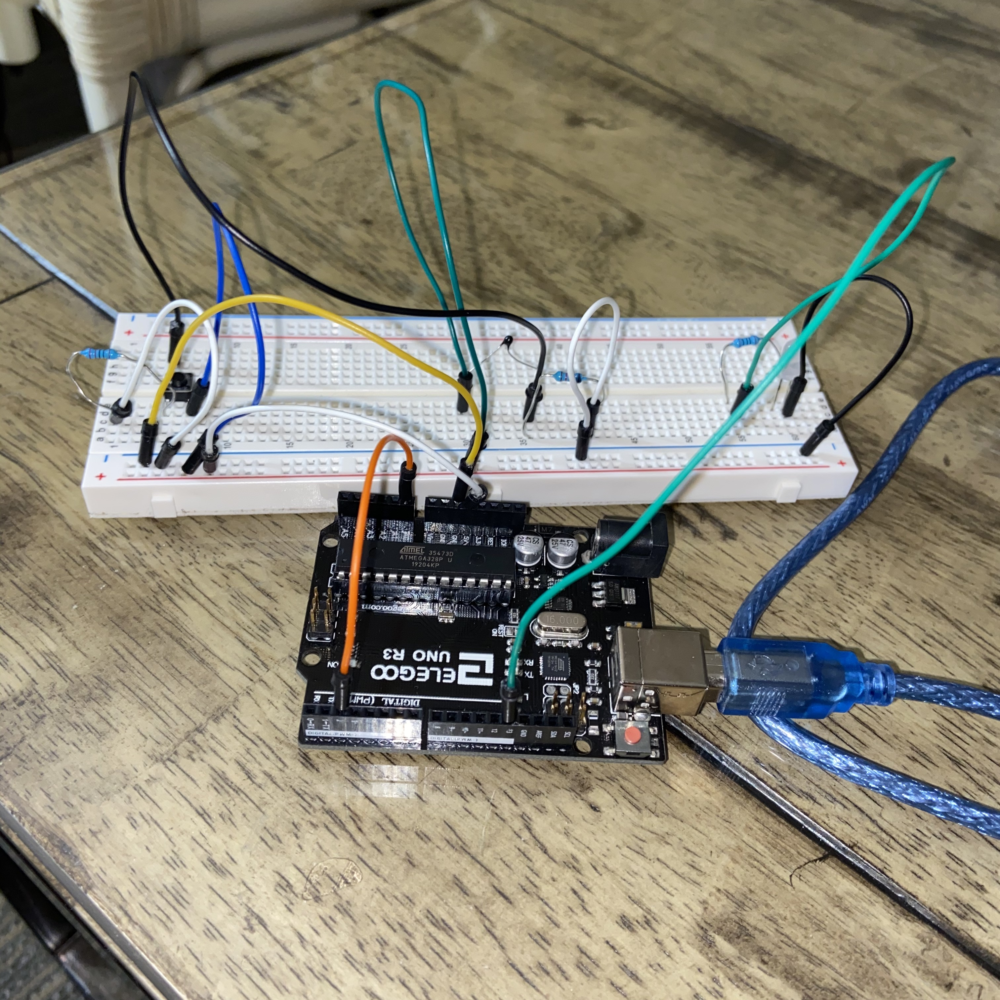

Assignment 6: Talking to Arduino!

^A picture of the circuit.
Here is all the documentation for assignment 6!
Below is the GIF of the circuit running.

Below is an image of the schematic. GOT HELP FROM STACKOVERFLOW AND ARDUINO AND KAY
Below is a snippet of the code used in Arduino.
const int button = 2; //associate the button with pin 2
const int therm = A0;//associate the thermistor sensor with analog input pin A0
//associate the LED with digital output pin 13
const int LED = 13;
//the setup function runs once the reset is pressed or the board is powered
void setup() {
//sets the speed of Arduino communication to 9600
Serial.begin(9600);
//initializes the button pin as INPUT
pinMode(button, INPUT);
//initializes the thermistor pin as INPUT
pinMode(therm, INPUT);
//initializes the LED as output
pinMode(LED, OUTPUT);
}
//the loop function runs continously
void loop() {
//(1 if pressed, 0 if not)
boolean buttonState = digitalRead(button);
//reads in the value of the thermistor sensor
int thermValue = analogRead(therm);
//if there's serial data
if (Serial.available() > 0) {
int inByte = Serial.read();//read in the written serial data into variable
//print the variable to the monitor for easy debugging and confirmation
Serial.print(inByte);
//if the read value is 49
//49 is "1" in ASCII and means the button is pressed
if (inByte == 49) {
//turns on the LED
digitalWrite(LED, HIGH);
//if the read value is 48
//49 is "0" in ASCII and means the button is not pressed
} else if (inByte == 48) {
//turns off the white LED
digitalWrite(LED, LOW);
}
}
//prints the start of the array for the tuple
Serial.print("[");
//prints the state of the button to the screen as part of the tuple
Serial.print(buttonState);
//a space in between two values makes a tuple
Serial.print(",");
//prints the thermistor value to complete the tuple of value pairs
Serial.print(thermValue);
//prints end of the array for the tuple
Serial.println("]");
//wait 200ms before reading next press or value
delay(200);
}
Code used in p5.js
var serial; // variable to hold an instance of the serialport library
var portName = /dev/tty.usbmodem14201 // name of my port
var dataarray = []; // some data coming in over serial!
var button; // variable to hold the state of the button
var therm; // variable to hold the thermistor sensor value
let position = 100; // initializes the starting position of the line to be at 100
var newarray; // container for the JSON parsed serial
var buttonState = 0; // variable to keep track of toggling the arduino white LED
// code runs once during setup
function setup() {
serial = new p5.SerialPort(); // make a new instance of the serialport library
serial.on('list', printList); // set a callback function for the serialport list event
serial.on('connected', serverConnected); // callback for connecting to the server
serial.on('open', portOpen); // callback for the port opening
serial.on('data', serialEvent); // callback for when new data arrives
serial.on('error', serialError); // callback for errors
serial.on('close', portClose); // callback for the port closing
serial.list(); // list the serial ports
serial.open(portName); // open a serial port
createCanvas(1200, 800); // creates a canvas of the specified size
background("#232126"); // sets the background color of the canvas to the hex
frameRate(30); // sets the rate at which the frame resets
// adds an event listener to the button displayed on the webpage
document.getElementById("led").addEventListener("click", led);
}
// get the list of ports:
function printList(portList) {
// portList is an array of serial port names
for (var i = 0; i < portList.length; i++) {
// Display the list the console:
print(i + " " + portList[i]);
}
}
// method used for debugging purposes
function serverConnected() {
// prints out success message
print('connected to server.');
}
// method used for debugging purposes
function portOpen() {
// prints out success message
print('the serial port opened.')
}
// method used for debugging purposes
function serialError(err) {
// prints out error message and the code
print('Something went wrong with the serial port. ' + err);
}
// method used for debugging purposes
function portClose() {
// prints out exiting message
print('The serial port closed.');
}
// method reads in serial and extracts button and thermistor values into variables
function serialEvent() {
if (serial.available()) { // if there is serial data
var datastring = serial.readLine(); // read in the serial data by line
var newarray; // create a variable for new array
try {
newarray = JSON.parse(datastring); // parse the serial to turn it into JSON data
} catch(err) { // if there is an error
console.log(err); // log the error to the console
}
if (typeof(newarray) == 'object') { // if the json data exists
dataarray = newarray; // assign the array to the new array because the data is valid
}
}
}
// function that sends serial data back to the arduino that changes the state of the LED
function led() {
if (buttonState > 1) { // if the buttonState variable is out of range (>1)
buttonState = 0 // then set buttonState back to the beginning (0)
}
if (buttonState == 1) { // if buttonState = 1
serial.write("1"); // then write 1 to the serial and send it back to the arduino
} else if (buttonState == 0) { // if buttonState = 0
serial.write("0"); // then write 0 to the serial and send it back to the arduino
}
// increment buttonState so it will create toggle appearance
buttonState++;
}
// function is looped over and handles the animations and interactivity on the screen
function draw() {
if (dataarray[0] == 1) { // if the button is pressed
background("##FF5733"); // change the background to the lighter hex
} else { // if the button is not pressed
background("#FFE333"); // change the background to the darker hex
}
if (dataarray[1] < 600) { // if the thermistor value is under 600
stroke("#58FF33"); // change the line stroke to green
} else { // if the thermistor value is over 600
stroke("#33FFC4"); // change the line stroke to turqoise.
}
strokeWeight(10); // set the stroke weight to thicker than default so you can see the line
position = position - 1; // decrement the position so the line appears to be moving up
if (position < 0) { // if the position is out of the screen
position = height; // start back over again
}
line(0, position, width, position); // draw the line
}
}